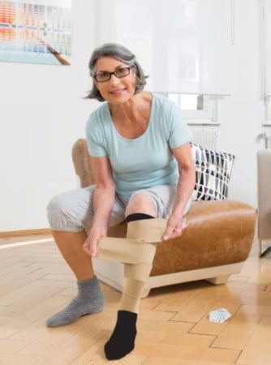

Prism Post
 Content provided courtesy of Convatec Inc.
Content provided courtesy of Convatec Inc.
Changing or emptying your ostomy pouch in public can be a daunting task. Here are some tips to help that process be easy and discreet.
- Try a moldable skin barrier so you can avoid prepping or cutting your supplies in a public restroom for a quicker pouch change. Learn more and request samples here.
- Always carry extra supplies in case you are stranded where supplies may not be available. Consider using a supplies bag that can hang on the back of a stall door for easy access to your supplies during the pouch change or emptying.
- Create a buffer with a layer of toilet paper in the toilet bowl to avoid splashing when emptying your pouch.
- Find the restrooms as you travel, shop or move through your community. Reduce your stress by being familiar with the location of the nearest restroom should you need it quickly.
- Download the Traveler’s Communication Card to help communicate when you urgently need access to a restroom. Download here.
For more support for living with an ostomy, join the me+™ patient support program today.
conv
 Our feet are the foundation of our body, carrying us through every step of our daily lives. Yet, we often overlook the importance of foot health until we experience pain or injury. Whether you’re an athlete pushing your limits, a healthcare professional on your feet all day, or someone dealing with a chronic foot condition, finding the right support for your feet is crucial. This is where Powerstep Insoles come into play.
Our feet are the foundation of our body, carrying us through every step of our daily lives. Yet, we often overlook the importance of foot health until we experience pain or injury. Whether you’re an athlete pushing your limits, a healthcare professional on your feet all day, or someone dealing with a chronic foot condition, finding the right support for your feet is crucial. This is where Powerstep Insoles come into play.
Powerstep is a leading brand in foot orthotics, specializing in providing comfort and support for a variety of foot injuries and issues. Their insoles are designed to alleviate pain, correct alignment, and improve overall foot health. Here are some of the common foot injuries and issues that can be addressed by Powerstep Insoles:
1. Plantar Fasciitis: This is one of the most common causes of heel pain. Plantar fasciitis occurs when the plantar fascia, a band of tissue connecting the heel bone to the toes, becomes irritated or inflamed. Powerstep Insoles provide arch support and cushioning, easing the strain on the plantar fascia and alleviating pain.
2. Flat Feet: Flat feet, also known as fallen arches, can cause a variety of issues, including foot pain, shin splints, and knee problems. Powerstep Insoles with built-in arch support help to distribute weight evenly across the foot, promoting proper alignment and reducing discomfort.
3. Metatarsalgia: This condition refers to pain and inflammation in the ball of the foot. Powerstep Insoles offer forefoot cushioning, reducing pressure on the metatarsal bones and relieving pain.
4. Overpronation: Overpronation occurs when the foot rolls inward excessively during walking or running. This can lead to a range of issues, including ankle instability and knee pain. Powerstep Insoles with a deep heel cup and firm arch support help to control pronation, providing stability and reducing the risk of injuries.
5. High Arches: High arches can cause foot strain, instability, and discomfort. Powerstep Insoles with cushioning and arch support help to provide shock absorption and distribute pressure evenly, relieving discomfort associated with high arches.
In addition to addressing specific foot injuries and conditions, Powerstep Insoles offer numerous benefits for overall foot health. They provide superior support, cushioning, and stability, reducing fatigue and preventing injuries. Powerstep Insoles are also designed with moisture-wicking materials, preventing odor and keeping your feet dry and fresh.
Finding the right insole for your feet can make a world of difference in terms of comfort and overall well-being. Powerstep Insoles have become a go-to solution for foot injuries and issues, trusted by athletes, healthcare professionals, and everyday individuals alike. So, if you’re looking for a reliable and effective solution to your foot problems, consider Powerstep Insoles. Your feet will thank you!
 When it comes to wound care, proper cleansing is of paramount importance to facilitate healing and reduce the risk of infection. Among the myriad of wound cleansers available, Vashe and Anasept stand out as effective options. Although both are designed to clean wounds, they differ in composition, mechanism of action, and specific use cases. In this blog post, we will explore the differences between Vashe and Anasept, shedding light on their unique features and highlighting their respective benefits for wound management.
When it comes to wound care, proper cleansing is of paramount importance to facilitate healing and reduce the risk of infection. Among the myriad of wound cleansers available, Vashe and Anasept stand out as effective options. Although both are designed to clean wounds, they differ in composition, mechanism of action, and specific use cases. In this blog post, we will explore the differences between Vashe and Anasept, shedding light on their unique features and highlighting their respective benefits for wound management.
1. Composition:
Vashe:
Vashe wound cleanser is a sterile, hypochlorous acid (HOCl) solution that replicates the body’s natural defense against bacteria. HOCl, produced by the body’s white blood cells, is a gentle yet powerful antimicrobial agent. Vashe has a physiological pH, making it less irritating to the skin and allowing for optimal wound healing.
Anasept:
Anasept, on the other hand,is a clear, isotonic liquid that helps in the mechanical removal of the debris and foreign material from the application site. Dirt, debris and foreign materials are mechanically removed by the action of the fluid (Wound Cleanser) moving across the wound bed or application site.
2. Mechanism of Action:
Vashe:
Vashe cleanses wounds by disrupting the biofilm, a protective layer formed by bacteria, allowing for better access to the wound bed for subsequent treatment. Additionally, it helps remove debris, exudate, and particulate matter, promoting a clean wound environment conducive to healing.
Anasept:
Anasept inhibits the growth of bacteria such as Staphlyococcus aureus, Psuedomonas aeruginosa, Escherichia coli, Proteus mirabilis, Serratia marcescens, Clostridium difficile, including antibiotic resistant Methicillin Resistant Staphylococcus aureus (MRSA), Vancomycin Resistant Enterococcus faecalis (VRE), Carbapenem Resistant E.coli (CRE) and Acinetobacter baumannii, that are commonly found in wound bed as well as fungi such as Candida albicans and Aspergillus niger.
3. Indications and Uses:
Vashe:
Vashe is suited for cleaning and irrigating various types of wounds, such as acute and chronic wounds, surgical wounds, pressure ulcers, diabetic foot ulcers, and burns. Its gentle nature makes it suitable for use on delicate or compromised skin.
Anasept:
Anasept is primarily indicated for use in the management of wounds that exhibit signs of infection or are at risk of infection. These may include surgical incisions, deep wounds, traumatic injuries, and localized infections caused by bacteria or fungi.
Conclusion:
While both Vashe and Anasept are effective wound cleansers, they possess distinct characteristics, compositions, and applications. Vashe’s physiological pH and HOCl formulation make it a gentle cleanser suitable for a wide range of wounds, focusing on biofilm disruption and debris removal. Anasept, inhibits the growth of bacteria and helps in the mechanical removal of the debris and foreign material from the application site. Understanding these differences allows healthcare professionals and patients to choose the most appropriate wound cleanser for their individual needs, ensuring optimal wound care and healing.
 Breast pumping can be a valuable tool for many breastfeeding mothers. Whether you’re going back to work, need to supplement your baby’s feedings, or just want to have a stash of milk on hand, a breast pump can help make breastfeeding more convenient and manageable. However, to get the most out of your pumping session, it’s essential to pump effectively. In this blog post, we’ll discuss some tips for how to breast pump more effectively, with a particular focus on the Spectra1 and Motif Luna breast pumps.
Breast pumping can be a valuable tool for many breastfeeding mothers. Whether you’re going back to work, need to supplement your baby’s feedings, or just want to have a stash of milk on hand, a breast pump can help make breastfeeding more convenient and manageable. However, to get the most out of your pumping session, it’s essential to pump effectively. In this blog post, we’ll discuss some tips for how to breast pump more effectively, with a particular focus on the Spectra1 and Motif Luna breast pumps.
1. Ensure a good fit: The first step to effective pumping is to make sure you have the right breast shield size for your nipples. Spectra1 and Motif Luna both come with various sizes of breast shields to accommodate different nipple shapes and sizes. Using the correct size will not only be more comfortable but also promote better milk flow.
2. Find a comfortable and relaxing environment: Choose a quiet and comfortable space where you can relax while pumping. Stress and discomfort can hinder milk letdown and reduce milk supply. Create a soothing ambiance by playing calming music, lighting a scented candle, or looking at pictures or videos of your baby.
3. Know your pump settings: One of the advantages of both the Spectra1 and Motif Luna breast pumps is their customizable settings. Familiarize yourself with the different features and settings of your pump, such as speed and suction strength. Experiment with the settings to find what works best for you and mimics your baby’s nursing pattern.
4. Use proper breast massage and stimulation techniques: Before attaching the breast shield, it’s beneficial to massage and stimulate your breasts to encourage milk flow. Gently massage your breasts in circular motions, starting from the outside and working towards the nipple. You can also use a warm compress or take a warm shower before pumping to help with letdown.
5. Double pump for efficiency: Both the Spectra1 and Motif Luna are double electric breast pumps, meaning they can pump both breasts simultaneously. Double pumping is more time-efficient and can stimulate milk production better than single pumping. It also has the added advantage of mimicking your baby’s natural nursing pattern, which can help increase milk supply.
6. Stay consistent with your pumping schedule: Regular and consistent pumping sessions will help maintain and increase milk supply. Aim to pump every two to three hours, even during the night, if possible. If you’re struggling to find time, try pumping on one breast while nursing on the other.
7. Stay hydrated and nourished: Drinking plenty of water throughout the day is essential to maintain your milk supply. Aim to consume at least eight glasses of water each day. Additionally, a healthy and balanced diet rich in fruits, vegetables, lean proteins, and whole grains will provide the necessary nutrients for milk production.
8. Relaxation and distraction techniques: Some women find it helpful to incorporate relaxation techniques during pumping, such as deep breathing exercises or meditation. Others prefer to distract themselves by watching a TV show, reading a book, or browsing their favorite social media platforms. Find what works best for you to make pumping a less stressful and more enjoyable experience.
Both the Spectra1 and Motif Luna breast pumps are highly rated among breastfeeding mothers for their efficiency, comfort, and customizable features. They are designed to mimic the natural nursing pattern, making pumping more effective and comfortable. However, even with the best breast pump, it’s important to remember that every woman’s breastfeeding journey is unique, and finding what works best for you may require some trial and error.
Effective pumping can help mothers maintain and increase milk supply while providing the convenience of stored breast milk. By ensuring a good fit, creating a comfortable environment, using proper breast massage techniques, utilizing the customizable settings of your chosen pump, and maintaining a regular pumping schedule, you can maximize your pumping sessions. The Spectra1 and Motif Luna breast pumps are excellent options to consider, as they offer features that can enhance your pumping experience. Remember to stay hydrated, nourished, and relaxed throughout the process. Happy pumping!

Compression therapy plays a crucial role in managing various medical conditions, including venous disorders, lymphedema, and chronic swelling. It involves the use of compression garments or bandages to exert pressure on the affected area, promoting better blood flow and reducing swelling. However, traditional compression garments can be difficult to don and doff, making it a cumbersome process for both patients and healthcare professionals. That’s where Juxta Lite comes in, providing a revolutionary solution by simplifying the donning and doffing process.Juxta Lite is a breakthrough compression wrap that offers a hassle-free experience for patients, making it easier for them to adhere to their prescribed treatment plans. With innovative design features and user-friendly elements, this compression wrap streamlines the process and ensures optimal therapy outcomes. Let’s explore the key benefits of Juxta Lite and how it is enhancing the compression therapy experience for patients worldwide.
1. Easy Donning: One of the most significant challenges for patients using traditional compression garments is the difficulty of putting them on. This process often involves complex steps, making it time-consuming and physically demanding. Juxta Lite eliminates these complications by utilizing an innovative wrap design. Patients simply wrap the Juxta Lite compression wrap around the affected area and secure it using the hook-and-loop closure system. This user-friendly approach saves patients time and energy, enabling them to easily incorporate compression therapy into their daily routines.
2. Simplified Doffing: Taking off traditional compression garments can be equally challenging, often requiring patients to exert significant effort or seek assistance. Juxta Lite solves this problem with its easy doffing system. The hook-and-loop closure system allows patients to simply undo the wrap without the need for excessive pulling or stretching. This not only reduces discomfort but also promotes independence and self-care, empowering patients to manage their compression therapy without relying on external help.
3. Adjustable Compression: Juxta Lite offers customizable compression levels, catering to each patient’s specific needs. With its built-in pressure system, patients can adjust the compression to their desired intensity easily. This feature is particularly beneficial for conditions that require varying levels of pressure management throughout the day. The ability to modify the compression level empowers patients to optimize their therapy for maximum comfort and effectiveness.
4. Comfortable and Breathable: Unlike some other compression garments that feel restrictive or cause discomfort during extended wear, Juxta Lite is designed with comfort in mind. The wrap is made from breathable, moisture-wicking fabric that allows air circulation, keeping patients cool and dry. Its lightweight and soft material ensure a comfortable fit, minimizing any potential skin irritation or chafing commonly associated with compression therapy.
5. Versatility: Juxta Lite can be used in various medical conditions that require compression therapy, including venous disorders, lymphedema, and chronic swelling. It is available in different sizes and lengths to accommodate varying anatomical or limb sizes, ensuring a proper fit for every patient. Additionally, Juxta Lite is suitable for both upper and lower extremities, making it a versatile solution for full-body compression needs.
In conclusion, Juxta Lite is revolutionizing the compression therapy experience by simplifying the donning and doffing process. Its user-friendly design, adjustable compression, comfort-enhancing features, and versatility make it an ideal choice for patients seeking an effective and convenient solution. By incorporating Juxta Lite into their treatment plans, patients can confidently manage their conditions and improve their overall quality of life.
 Parenthood is a beautiful and rewarding experience, but it also comes with its fair share of worries and sleepless nights, especially when it comes to the safety and well-being of our little ones. However, thanks to groundbreaking technology, we now have the Owlet Dream Sock and Baby Monitor, an innovative solution that offers parents peace of mind while their baby peacefully sleeps. In this blog post, we will explore how this remarkable device works and why it is a game-changer for new parents.
Parenthood is a beautiful and rewarding experience, but it also comes with its fair share of worries and sleepless nights, especially when it comes to the safety and well-being of our little ones. However, thanks to groundbreaking technology, we now have the Owlet Dream Sock and Baby Monitor, an innovative solution that offers parents peace of mind while their baby peacefully sleeps. In this blog post, we will explore how this remarkable device works and why it is a game-changer for new parents.
Safe and Secure Monitoring:
The Owlet Dream Sock and Baby Monitor is a revolutionary system that combines the benefits of a sock monitor and a high-quality video baby monitor to create a comprehensive and secure way of monitoring your baby. The sock monitor is designed to fit comfortably on your baby’s foot, tracking their oxygen levels and heart rate, thus allowing you to receive real-time data straight to your smartphone or the included base station.
Real-Time Alerts and Notifications:
One of the standout features of the Owlet Dream Sock is its ability to alert you if it detects any abnormalities in your baby’s vital signs. If a significant change occurs, such as a drop in oxygen levels, irregular heart rate, or even if the sock is not correctly positioned, you’ll be instantly notified via your smartphone or the base station, ensuring timely intervention and peace of mind. This level of monitoring extends beyond just visual and auditory cues, providing an added layer of vigilance and reassurance.
HD Video and Two-Way Audio Communication:
Not only does the Owlet Dream Sock provide comprehensive vital sign monitoring, but it also comes with a high-quality video and audio capabilities. The camera captures crystal-clear HD video of your little one, allowing you to observe their sleeping patterns, movements, and facial expressions, while the integrated microphone and speaker enable two-way audio communication between parent and child. This feature proves particularly useful for soothing your baby back to sleep without the need for physical presence in the room.
User-Friendly and Intuitive Design:
The Owlet Dream Sock and Baby Monitor is designed with user convenience in mind. The mobile app offers a user-friendly interface that allows you to customize alerts and notifications, view real-time data, review historical trends, and even share access with trusted caregivers. Additionally, the base station proves essential during nighttime hours when you might prefer to leave your phone on silent or in a different room.
Conclusion:
Being a new parent is filled with joy, but it can also be an overwhelming experience, constantly worrying about your baby’s well-being. With the Owlet Dream Sock and Baby Monitor, you no longer have to stay awake all night or experience anxiety-filled moments. This groundbreaking device provides comprehensive monitoring of your baby’s vital signs while offering high-quality video and audio capabilities, ensuring you can rest easy while they sleep soundly. Invest in the Owlet Dream Sock and Baby Monitor today, and embark on a journey of parenthood where peace of mind takes center stage.
 After months of anticipation and excitement, your baby has finally arrived! Congratulations on the new addition to your family. Now that your little one is here, your body will undergo several changes as it heals and adjusts to postpartum life. One essential tool that can help aid in your postpartum recovery is a postpartum recovery garment. Let’s explore what postpartum recovery garments are and how they can benefit you during this important healing period.
After months of anticipation and excitement, your baby has finally arrived! Congratulations on the new addition to your family. Now that your little one is here, your body will undergo several changes as it heals and adjusts to postpartum life. One essential tool that can help aid in your postpartum recovery is a postpartum recovery garment. Let’s explore what postpartum recovery garments are and how they can benefit you during this important healing period.
What are postpartum recovery garments?
Postpartum recovery garments, also known as postpartum girdles or belly wraps, are specially designed compression garments that provide support to your abdomen, lower back, and pelvis after giving birth. These garments are typically made from a blend of spandex and nylon or other soft and breathable materials. They are adjustable and can be worn discreetly under your clothes.
What are the benefits of using postpartum recovery garments?
1. Provides gentle compression: Postpartum recovery garments offer gentle compression to your abdominal area, which helps to support the muscles and tissues that have been stretched during pregnancy. This compression can help to reduce swelling and promote faster healing.
2. Supports posture and back muscles: Pregnancy and childbirth can cause back pain and weakened back muscles. Postpartum recovery garments provide additional support to your lower back, helping to alleviate discomfort and improve posture.
3. Assists with diastasis recti recovery: Diastasis recti is a condition where the abdominal muscles separate during pregnancy. Postpartum recovery garments can help facilitate the healing process by gently bringing the abdominal muscles back together.
4. Helps with uterus shrinkage: After giving birth, your uterus will start to shrink back to its pre-pregnancy size. Postpartum recovery garments can provide gentle compression to the abdomen, aiding in the natural process of uterine contraction.
5. Boosts confidence and self-esteem: Adjusting to your post-baby body can be challenging, both physically and emotionally. Wearing a postpartum recovery garment can help you feel more supported and provide a smoother silhouette under your clothes, boosting your confidence and self-esteem.
How long should you wear a postpartum recovery garment?
The length of time you should wear a postpartum recovery garment varies for each individual. It is recommended to consult with your healthcare provider to determine the best timeline for you. Generally, it is advised to wear the garment consistently for the first six to eight weeks postpartum. Afterward, you can gradually reduce the usage based on your comfort level and recovery progress.
In conclusion, postpartum recovery garments can be a great asset during your healing journey after giving birth. They provide support, comfort, and help your body recover faster. However, it is important to remember that postpartum recovery garments are not a substitute for proper medical care and should be used in conjunction with a healthy lifestyle and any instructions provided by your healthcare provider. Remember to listen to your body and give yourself the time and care you need as you navigate this beautiful postpartum phase.
 During the summer months, the heat can exacerbate lymphedema symptoms and make them more difficult to manage. Here are some tips for dealing with lymphedema in the summer heat:
During the summer months, the heat can exacerbate lymphedema symptoms and make them more difficult to manage. Here are some tips for dealing with lymphedema in the summer heat:
1. Stay cool: Avoid spending too much time outdoors in extreme heat. When you do go outside, try to stay in shaded areas and wear loose, lightweight clothing to help keep your body cool.
2. Drink plenty of fluids: Staying hydrated is key in managing lymphedema. Drinking plenty of fluids can help prevent fluid retention and keep your body temperature regulated.
3. Keep limbs elevated: Elevating your affected limb(s) can help reduce swelling. Try Lounge Doctor when sitting or lying down.
4. Avoid prolonged sun exposure: Direct sunlight can make the symptoms of lymphedema worse. Protect your affected limb(s) from the sun by applying sunscreen or wearing UV-protected clothing.
5. Avoid tight clothing and accessories: Tight clothing and accessories can constrict lymph flow and worsen swelling. Opt for loose-fitting and breathable clothing, and avoid wearing tight jewelry or accessories on the affected limb.
6. Exercise in moderation: Regular exercise can help improve lymphedema symptoms, but it’s important to avoid overexertion in the heat. Choose activities that you enjoy and are comfortable with, and take frequent breaks to rest and cool down.
7. Use compression garments: Compression garments, such as compression sleeves or stockings, can help reduce swelling and improve lymphatic flow. Talk to your healthcare provider about the best compression options for you.
8. Practice proper skincare: Keep your skin clean and moisturized to prevent infections and dryness. Avoid extreme hot water temperatures when bathing or showering, as this can aggravate lymphedema symptoms.
9. Take precautions when traveling: If you’re traveling during the summer, take extra precautions to manage lymphedema. Keep your affected limb elevated during long periods of sitting or standing, and take breaks to move around and stretch regularly.
10. Stay consistent with self-care: Consistency is important in managing lymphedema, especially during the summer months. Stick to your self-care routine of exercises, compression garment wear, and skincare to help keep symptoms under control.
Remember to consult with your healthcare provider or lymphedema therapist for personalized advice and recommendations on managing lymphedema in the summer heat.
As the summer sun blazes overhead, temperatures soar and the heat becomes an inescapable part of our daily lives. While the warm weather brings with it long days and the promise of fun-filled adventures, it can also take a toll on our physical and mental well-being. In this blog, we will explore the effects of the heat on our bodies and minds and discuss some effective strategies to beat the summer heat and keep ourselves cool, comfortable, and healthy.

1. Understanding the Effects of Heat:
Prolonged exposure to high temperatures can lead to a multitude of health issues. Heat exhaustion, heatstroke, dehydration, sunburns, and fatigue are just a few of the problems that can arise from extreme heat. It is essential to recognize the symptoms of heat-related illnesses, such as dizziness, rapid heartbeat, headache, confusion, and excessive sweating. Identifying these signs early can prevent further complications and ensure prompt intervention.
2. Stay Hydrated:
One of the most important steps to take during hot weather is to stay adequately hydrated. Our bodies lose fluid through sweating, which can lead to dehydration if not replenished. Make it a habit to drink plenty of water throughout the day, even if you don’t feel excessively thirsty. Avoid excessive consumption of caffeinated and alcoholic beverages, as they can contribute to dehydration. Fresh fruits and vegetables with high water content, such as watermelon and cucumbers, can also aid in hydration.
3. Dress Appropriately:
When it comes to clothing, choosing the right fabric can make a significant difference in your comfort during hot summer days. Opt for loose-fitting, light-colored, and breathable clothes made of cotton or linen. These natural fabrics allow air circulation and help wick away sweat, keeping your body cool. Don’t forget to protect yourself from the sun by wearing a wide-brimmed hat, sunglasses, and applying sunscreen to exposed skin.
4. Seek Shade and Stay Cool:
Finding shade whenever possible is an excellent strategy to beat the heat. On scorching summer afternoons, try to limit exposure to direct sunlight, especially during peak hours. Instead, spend time in air-conditioned spaces like malls, theaters, or public libraries. If you’re at home, close curtains or blinds to block out the sun’s heat and maintain a cooler indoor environment. Utilize fans or air conditioning to circulate cool air and maintain a comfortable temperature.
5. Modify Your Routine:
Adjusting your daily routine during the hottest parts of the day can help minimize the heat’s impact on your body. Plan outdoor activities for early mornings or late evenings when temperatures are relatively cooler. If you must exercise outdoors, choose shaded areas or opt for water-based activities like swimming. Remember to take frequent breaks and listen to your body’s signals, allowing yourself ample time to rest and cool down when needed.
6. Stay Connected:
During periods of intense heat, it’s essential to keep an eye on weather forecasts and heat advisories. Staying informed about the current weather conditions can help you plan your activities accordingly and take necessary precautions. Additionally, make sure to check on elderly relatives, friends, or neighbors who may be more vulnerable to the effects of extreme heat.
Conclusion:
As summer brings forth its unrelenting heat, it’s crucial to prioritize our well-being and take the necessary steps to protect ourselves. By staying hydrated, dressing appropriately, seeking shade, and adjusting our routines, we can navigate the scorching temperatures more comfortably. Remember, beating the heat is not just about physical well-being; it also contributes to our mental health and overall enjoyment of the season. Stay cool, stay safe, and make the most of the summer months!
When it comes to healing wounds, finding the right dressing is essential to ensuring the wound is taken care of in the best way possible. Foam dressings are a popular option for wounds due to their absorbent nature and ease of use, but are they the right choice for your wound?
Foam dressings are highly absorbent, ideal for wounds with moderate to heavy exudate. They are comprised of an open–celled foam layer, often backed by a waterproof outer layer, making them suitable for use in situations where exudate or moisture needs to be kept away from the wound. This makes them an ideal choice for wounds with abundant exudate, or for wounds such as leg ulcers which may be exposed to water or other liquids.
Foam dressings are usually soft and comfortable, with some even providing additional cushioning and shock absorption. This makes them suitable for wounds with high levels of friction or trauma, such as those resulting from bedsores. The flexible material molds to the wound bed, meaning the dressing is less likely to cause skin damage or disruption to healing.
Despite all these benefits, foam dressings are not always suitable for every wound. Not all foams are breathable, and therefore more suitable for short–term use on wounds that require an increased amount of moisture, such as exuding burns or scalds. Foam dressings may not be suitable for wounds that have little or no exudate, as the dressing may absorb fluids from the rest of the skin causing the skin to become dry and irritated.
Ultimately, when it comes to choosing the right wound dressing, it is important to consider the needs of the wound and patient. When it comes to foam dressings, they are best for wounds with moderate–to–heavy exudate, and those which need cushioning or the absorption of moisture. If you think a foam dressing could be the right choice for your wound, it is best to consult with your healthcare professional before making the final decision.
Content blocked
Please accept cookies in the consent banner to view this content.